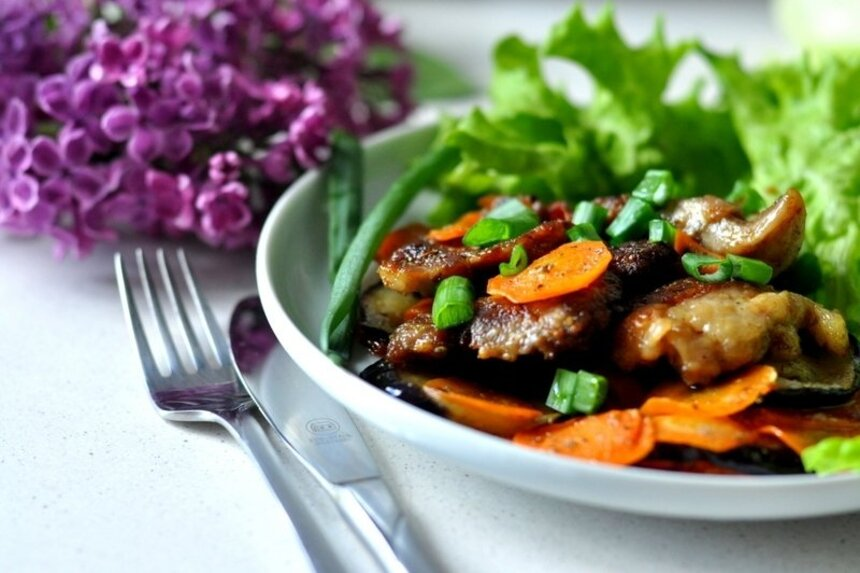

Pikantiški avienos kepsneliai
Ingredientai:
- 600 g avienos
- 1 baklažano
- 2 morkų
- Prieskonių
- Majonezo
- 3 skiltelių česnako
Paruošimas
Paruošimo laikas: Apie 30 min.
- Avieną supjaustyti kepsniams, išmušti, pabarstyti prieskoniais ir marinuoti majoneze per naktį. Kepti keptuvėje, kol gražiai iškeps. Supjaustyti griežinėliais morkas, baklažanus, česnaką susmulkinti ir, baigiant kepti mėsai, sudėti į keptuvę daržoves. Troškinti, kol mėsa taps minkšta. Skanaus.